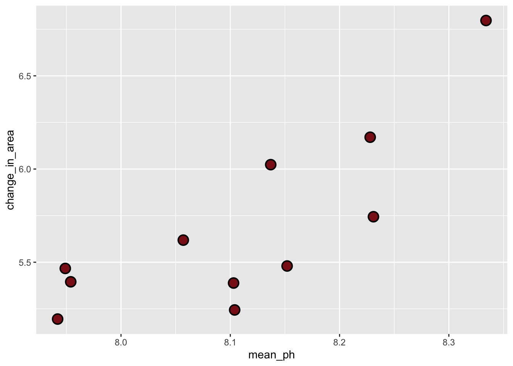
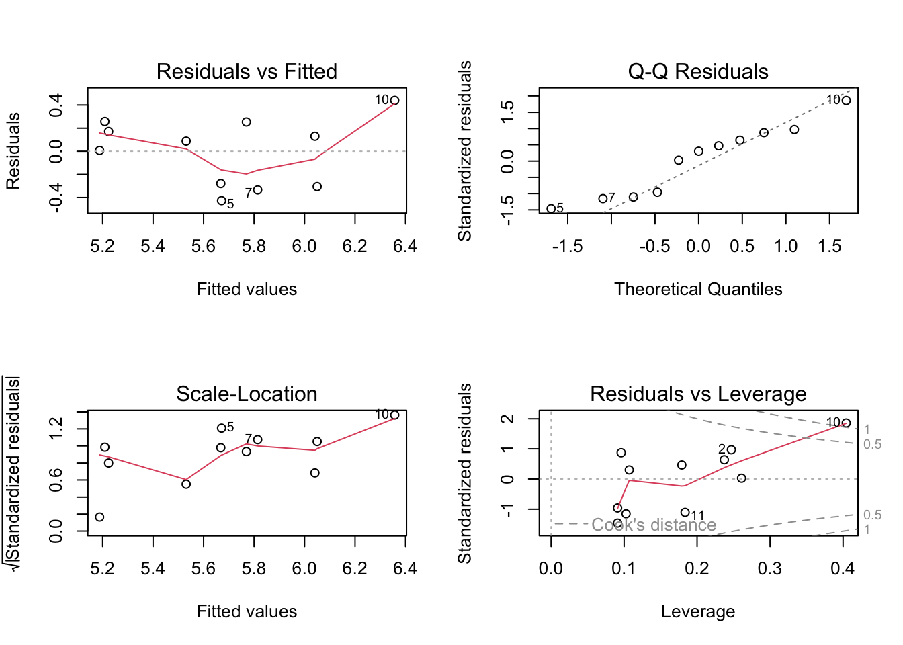
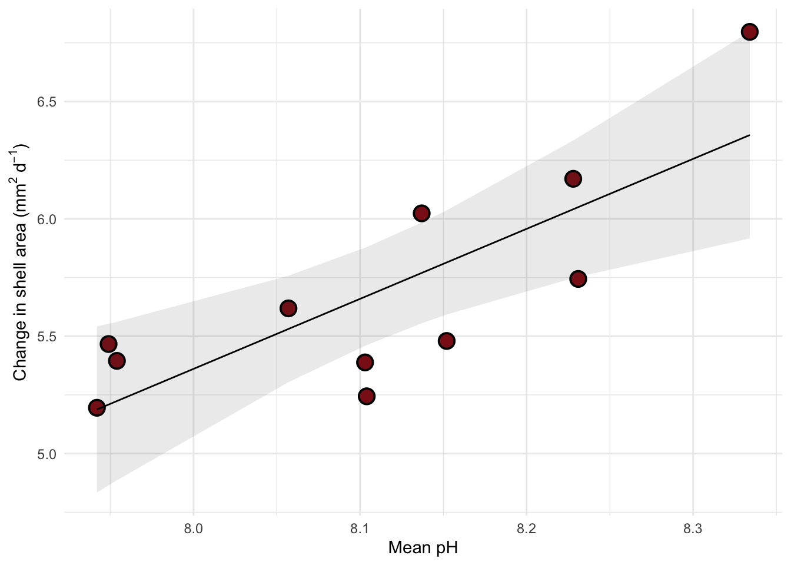

library(tidyverse) # general use
library(janitor) # cleaning data frames
library(here) # file/folder organization
library(readxl) # reading .xlsx files
library(ggeffects) # generating model predictions
library(gtsummary) # generating summary tables for models
# abalone data from Hamilton et al. 2022
abalone <- read_xlsx(here("data", "Abalone IMTA_growth and pH.xlsx"))Linear regression: Abalone growth and pH example
Set up
Abalone example
Data from Hamilton et al. 2022. “Integrated multi-trophic aquaculture mitigates the effects of ocean acidification: Seaweeds raise system pH and improve growth of juvenile abalone.” https://doi.org/10.1016/j.aquaculture.2022.738571
a. Questions and hypotheses
Question: How does pH predict abalone growth (measured in change in shell surface area per day, mm2 d-1)?
H0: pH does not predict abalone growth (change in shell surface area per day, mm2 d-1).
HA: pH predicts abalone growth (change in shell surface are per day, , mm2 d-1)
b. Cleaning
#
abalone_clean <- abalone |>
# cleaning up all column names
clean_names() |>
# selecting columns of interest
select(mean_p_h, change_in_area_mm2_d_1_25) |>
# renaming column names for easier use
rename(mean_ph = mean_p_h,
change_in_area = change_in_area_mm2_d_1_25)Don’t forget to look at your data! Use View(abalone_clean) in the Console.
c. Exploratory data visualization
# base layer ggplot call
# base layer ggplot call
ggplot(data = abalone_clean,
aes(x = mean_ph,
y = change_in_area)) +
geom_point(size = 4,
stroke = 1,
fill = "firebrick4",
shape = 21)
Where does the missing value come from?
insert response here
Don’t forget to turn your warnings off either in the individual code chunk or in the YAML at the top of the file.
d. Abalone model
Model fitting
abalone_model <- lm(
change_in_area ~ mean_ph, #
data = abalone_clean # data clean abalone data set
)Diagnostics
par(mfrow = c(2, 2)) # display
plot(abalone_model) # plot residuals
Personal Notes Residuals seem homoscedastic (consistent across values) based on residuals vs fitted and scale loaction plots. residuals also seem normally distributed based on QQ plot. No major outliers based on Residuals vs. leverage plot
Written Communications we evaluated model assumptions visually . for homoscedasticity of residuals we used residuals vs. fitted and scale location plots. for normality of residuals, we used QQ plots . based on our diagnostics there were no major deviations from homoscedasticity or normality or residuals there were also no outliers that might influence model estimates or predictors . ### Model summary
# more information about the model
summary(abalone_model)
Call:
lm(formula = change_in_area ~ mean_ph, data = abalone_clean)
Residuals:
Min 1Q Median 3Q Max
-0.42714 -0.29282 0.08769 0.21258 0.43965
Coefficients:
Estimate Std. Error t value Pr(>|t|)
(Intercept) -18.5010 6.1601 -3.003 0.01488 *
mean_ph 2.9827 0.7596 3.926 0.00348 **
---
Signif. codes: 0 '***' 0.001 '**' 0.01 '*' 0.05 '.' 0.1 ' ' 1
Residual standard error: 0.3063 on 9 degrees of freedom
(1 observation deleted due to missingness)
Multiple R-squared: 0.6314, Adjusted R-squared: 0.5905
F-statistic: 15.42 on 1 and 9 DF, p-value: 0.003477What is the slope estimate (with standard error?)
2.98 +- 0.76 (SE) with each increase in pH , the model predict an increase of 2.98 +- 0.76 (SE) in change in shell surfface area per day (mm2 d-1).
What is the intercept estimate (with standard error?)
18.5 +- 6.16 (SE). When pH = 0, the model predicts that abalone change in shell surface area per day is -18.5 +- 6.16 (note to self: this is not necessarily biologically realistic , but is something the model generates as an estimate).
Generating predictions
# creating a new object called abalone_preds
abalone_preds <- ggpredict(
abalone_model, # model object
terms = "mean_ph" # predictor (in quotation marks)
)
# display the predictions
abalone_preds# Predicted values of change_in_area
mean_ph | Predicted | 95% CI
--------------------------------
7.94 | 5.19 | 4.83, 5.54
7.95 | 5.21 | 4.86, 5.55
8.06 | 5.53 | 5.30, 5.76
8.10 | 5.67 | 5.46, 5.88
8.10 | 5.67 | 5.46, 5.88
8.14 | 5.77 | 5.55, 5.98
8.15 | 5.81 | 5.59, 6.04
8.33 | 6.36 | 5.92, 6.80Look at the column names using colnames(abalone_preds) in the Console.
What are the column names?
x: is the predictor variable values (pH)
predicted: model predictions for change in shell surface area per day
std. error: standar error, precision of the predictor
conf.low and conf.high: range for the 95% CI around model predictions
Look at the actual object (by clicking on it in Environment).
Look at the class of the object using class(abalone_preds) in the Console.
What is this type of object?
insert your notes here
View abalone_preds like a data frame.
Why generate model predictions?
This dataset does not include any actual observations of abalone growth at pH = 8.
However, the model can tell us a prediction for what abalone growth could be if pH = 8 based on the existing data.
Figure out what abalone growth the model would predict at pH = 8.
# finding the model prediction at a specific value
ggpredict(
abalone_model, # model object
terms = "mean_ph[8]" # predictor (in quotation marks) and predictor value in brackets
)# Predicted values of change_in_area
mean_ph | Predicted | 95% CI
--------------------------------
8 | 5.36 | 5.08, 5.64How would you interpret this?
at pH = 8, the model predicts that abalone change in shell surface area per day should be 5.36 mm2 d-1 (95% CI: [5.08, 5.64]
Visualizing model predictions and data
# base layer: ggplot
# using clean data frame
ggplot(data = abalone_clean,
aes(x = mean_ph,
y = change_in_area)) +
# first layer: points representing abalones
geom_point(size = 4,
stroke = 1,
fill = "firebrick4",
shape = 21) +
# second layer: ribbon representing confidence interval
# using predictions data frame
geom_ribbon(data = abalone_preds,
aes(x = x,
y = predicted,
ymin = conf.low,
ymax = conf.high),
alpha = 0.1) +
# third layer: line representing model predictions
# using predictions data frame
geom_line(data = abalone_preds,
aes(x = x,
y = predicted)) +
# axis labels
labs(x = "Mean pH",
y = expression("Change in shell area ("*mm^{2}~d^-1*")")) +
# theme
theme_minimal()
Creating a table with model coefficients, 95% confidence intervals, and more
Note: both these functions are from gtsummary.
tbl_regression(abalone_model,
# make sure the y-intercept estimate is shown
intercept = TRUE,
# changing labels in "Characteristic" column
label = list(`(Intercept)` = "Intercept",
mean_ph = "pH")) |>
# changing header text
modify_header(label = "**Variable**",
estimate = "**Estimate**") |>
# turning table into a flextable (makes things easier to render to word or PDF)
as_flex_table()Variable | Estimate | 95% CI | p-value |
|---|---|---|---|
Intercept | -19 | -32, -4.6 | 0.015 |
pH | 3.0 | 1.3, 4.7 | 0.003 |
Abbreviation: CI = Confidence Interval | |||
END OF ABALONE EXAMPLE